دو پا بد!
ایران: انقلاب - فصل اول
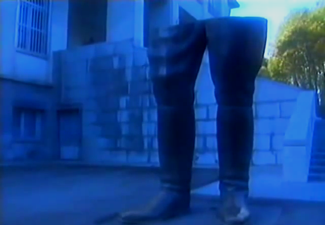
در سال ۱۹۷۹، اسلام سیاسی با انقلاب ایران، که روحانی ۷۶ ساله ای به نام روح الله خمینی را به قدرت رساند، به تیتر یک خبر در غرب تبدیل شد. پیش از این، ظهور اسلام به عنوان عاملی در ژئوپلیتیک تنها توسط کسانی که علاقهمند به این منطقه بودند، تصدیق میشد. پس از آن، نمی توان آن را نادیده گرفت. در نگاهی به گذشته، یکی از شگفتانگیزترین چیزها در مورد آن میزان تعجب هم عصرانش بود. در سال ۱۹۷۸، گزارش سیا در مورد ایران بیان کرد که «شاه تا دهه ۱۹۸۰ در زندگی ایرانیان شرکت فعالی خواهد داشت» و «در آینده نزدیک هیچ تغییر اساسی در رفتار سیاسی ایران رخ نخواهد داد». اظهار داشت: «در وضعیت انقلابی و حتی پیش از انقلاب نیست.» اما در عرض یک سال، یک سلطنت ۲۵۰۰ ساله سرنگون شد و یک جمهوری اسلامی به جای آن تأسیس شد. واقعیت اخیر این انتظارات را مخدوش کرد که اگر قرار بود تغییری رخ دهد، از نیروهای مترقی چپ به جای روحانیون یا علما سرچشمه میگرفت. بنابراین، درک ریشههای بحرانی که ایران را فراگرفته است و بررسی اینکه چرا برای رهایی از حاکم خودکامهاش، روند بسیاری از انقلابها در غرب را زیر پا گذاشت و به جای پذیرش ایدئولوژیهای مبتنی بر روشنگری، به جای آن به سمت خود روی آورد، مهم است. (چیزی که به هر حال برای بسیاری از افراد خارجی ظاهر شد).
به طور کلی، ریشههای انقلاب در ایران شباهتهایی با تلاش همزمان برای انقلاب اسلامی در مصر دارد که در آخرین پست مورد بحث قرار گرفت. مانند مصر، یک حاکم تحت حمایت غرب در دوره ای از رشد اقتصادی سریع که به نفع نخبگان کوچکی بود، ریاست می کرد. این رشد با هجوم سرمایه از غرب و با غرب زدگی فرهنگی آشفته و سرگردان کشور همراه بود. این فرآیندها بخش بزرگی از جمعیت را که فقیر باقی مانده بودند، از خود بیگانه کرد، اما به دلیل فقدان هرگونه فرآیند دموکراتیک، از هرگونه نفوذ بر حاکمیت کشور محروم شدند. بیشتر این نارضایتی ناشی از تعداد زیادی از مردم مناطق روستایی بود که در جستجوی کار به شهرها نقل مکان کرده بودند و اغلب فقیر، بی ریشه و بیگانه مانده بودند - مخاطبانی پذیرا برای مخالفان حکومت شاه. با این حال، به نظر میرسد که شاه تا قبل از برکناری خود از وجود این توده خشمگین غافل بوده است. این هم شاه، محمدرضا پهلوی، با لباس معمولی:
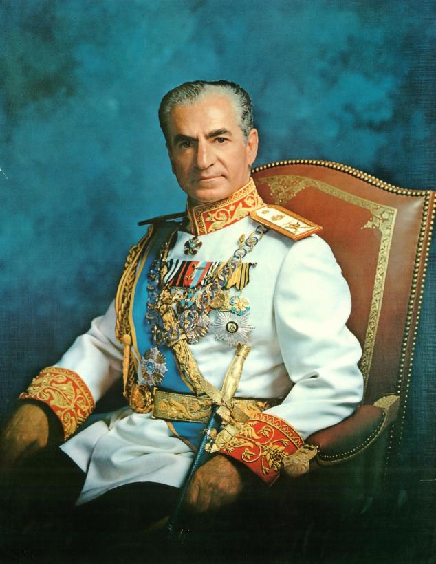
برای درک چگونگی رسم وی به این امر، ذکر این نکته مهم است که ایران از زمان های بسیار قدیم یک حکومت خودکامه نبوده است. اغلب اشاره می شود که سقوط شاه به یک نهاد ۲۵۰۰ ساله پایان داد، اما خاندان پهلوی ضرباتی بود که اخیراً توسط یک افسر ارتش ایران، رضا شاه پهلوی، در سال ۱۹۲۵ تأسیس شد. آلمانی ها در طول جنگ جهانی دوم و توسط متفقین به نفع پسر ۲۲ ساله خود مجبور به کناره گیری شد. محمدرضا یکی از متحدان سرسخت غربی بود که به متحدان شوروی خود در مرز شمالی خود اجازه ارسال تدارکات را می داد. پس از جنگ، سالهای اولیه سلطنت شاه شاهد تضعیف نقش او در کشور بود و به سمت ایران دموکراتیکتر و متکثرتر حرکت میکرد. ممکن است تصور شود که اربابان جدید آمریکایی کشور طرفدار این نیروهای مدرن شونده باشند، اما یک چیز مشخص کرد که آنها طرف شاه خودکامه و ضد دمکراتیک را بگیرند. یک بار دیگر در مورد نفت صحبت می کنیم.
شرکت نفت انگلیس و ایران در سال ۱۹۰۸ میلادی به منظور بهره برداری از یک کشف نفتی در غرب ایران تأسیس شد. آنها چیزی را ساختند که در پنجاه سال آینده به بزرگترین پالایشگاه نفت در جهان تبدیل شد. با تبدیل شدن نفت به منافع استراتژیک غرب، حفظ کنترل بر ایران نیز اهمیت بیشتری پیدا کرد. برای بریتانیا، به ویژه در دهه ۱۹۵۰ (که در جنگ جهانی دوم ورشکسته شده بود) نفت ارزان ایران به عنوان پایه اصلی اقتصاد و وسیله ای برای به دست آوردن ارزهای مهم خارجی از طریق فروش مجدد آن تلقی می شد. طعنه آمیز است که در زمانی که یک دولت کارگر بریتانیا برنامه بی سابقه ملی شدن را در داخل کشور آغاز می کرد، آمادگی مقابله با چنین اقداماتی را در کشوری مانند ایران نداشت، زیرا احساس می کرد می تواند از نظر دیپلماتیک یا نظامی به آن فشار بیاورد. (در صورت لزوم) با این حال، هل دادن ایران به اطراف، کار سادهای مانند سرزمینهایی مانند عربستان سعودی نبود، دولتهای تازهای که میتوان آنها را با وعده سرمایهگذاری و تسلیحات دستکاری کرد و خرید. یا مناطقی که تحت کنترل عثمانی بوده و پس از جنگ جهانی اول تحت سلطه بریتانیا و فرانسه قرار گرفته اند. ایران یک پادشاهی مستقل بود (همچنان خود را «امپراتوری» میشمرد) با تاریخی طولانی و پر افتخار به عنوان یکی از مراکز تمدن باستانی. تهاجم نیروهای بریتانیا و شوروی به کشور در سال ۱۹۴۱ تحقیر آمیزی بود که به سرعت فراموش نمی شد. نصب پهلوی جوان و همچنین حوادثی که در سالهای آینده رخ داد، شهرت او را در نظر بسیاری از ایرانیان به عنوان یک حاکم تحمیلی خارجی تثبیت کرد. این حوادث تأیید می کند که انگلیسی ها و آمریکایی ها واقعاً او را وسیله ای برای حفظ منافع اقتصادی خود در کشور می دانستند.
این منافع از سوی نیروهایی که آزاد شده بودند مورد تهدید قرار گرفت. زیرا به ایرانیان کنترل بیشتری بر نحوه اداره کشورشان داده شد. در سال ۱۹۵۱ انتخابات، نخست وزیری به نام محمد مصدق را به قدرت رساند که حزبش (جبهه ملی) به جای تعداد اندکی سرمایه گذار خارجی، به دنبال ملی کردن نفت ایران و مدیریت آن در جهت منافع مردم ایران بود. در اینجا تصویری از مصدق در دوران کودکی را مشاهده می کنید که در کنار یک صندلی خالی ایستاده و در هنگام انتصاب به عنوان نخست وزیر با شاه ملاقات می کند و بعداً در حبس خانگی است.
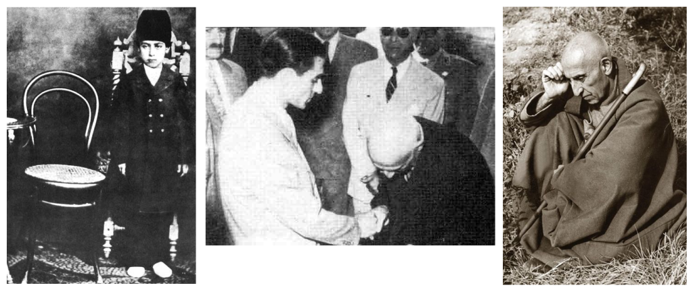
دولت مصدق طیفی از اصلاحات را ارائه کرد که بستر هر دموکراسی مدرن و باثباتی را تشکیل میداد: گسترش امتیاز، رفاه اجتماعی، پروژههای کارهای عمومی. اما به دلیل تعهد حزبش به تحت کنترل درآوردن نفت ایران، انگلیسیها (که منافعشان مستقیماً در خطر بود) و آمریکاییها (که طبق معمول دست شوروی و کمونیسم را در هر کاری که مصدق انجام داد میدیدند) مصمم به نابودی او شدند. پروژه در شاه یک متحد آماده پیدا کردند. او قبلاً در سالهای پس از به قدرت رسیدن تلاش می کرد تا قدرت سلطنت را تقویت کند. طوفان همدردی در پی یک سوء قصد در سال ۱۹۴۹ برای اصلاح قانون اساسی به منظور افزایش اختیارات وی مورد استفاده قرار گرفت. به عنوان گذشته، جالب است که در مورد شناسایی نادرست قاتل احتمالی شاه نیز تأمل کنیم. مایل بود این حادثه را با روایتی از خود به عنوان یک جنگجوی صلیبی ضد کمونیست تطبیق دهد، فرض بر این بود که عامل آن یکی از اعضای حزب کمونیست توده است. در واقع، او یک بنیادگرای مذهبی بود که از تمایلات سکولاریستی شاه ناراضی بود. این پیشنمایشی از شکست مداوم شاه در شناخت نقاط قوت نسبی دشمنانش در داخل کشور و بهویژه قدرت مخالفت روحانیون است.
تلاش شاه برای افزایش قدرت یکی از عوامل اصلی شکل گیری و بسیج جنبش مصدق بود که بازگشت به استبداد سلطنتی را گامی به عقب می دانست. اما انگلیسی ها و آمریکایی ها با اقدامات خود برای ملی کردن نفت ایران دست به اقدامی پنهانی زدند. سرویس مخفی آمریکا، «سیا» و سرویس مخفی بریتانیا، «MI6» در کودتا برای جایگزینی مصدق با یک رهبر نظامی به انتخاب خود به عنوان نخست وزیر همکاری کردند. کسی که تسلیم خواسته های شاه برای نفوذ بیشتر شود و البته هرگونه تصور مصادره منافع نفتی غرب در کشور را فراموش کند. این توطئه توسط رئیس سیا، آلن دالس (پایین، سمت راست) طراحی شد و توسط کرمیت روزولت جونیور هماهنگ شد. (پایین، وسط)، نوه رئیس جمهور سابق تئودور روزولت.
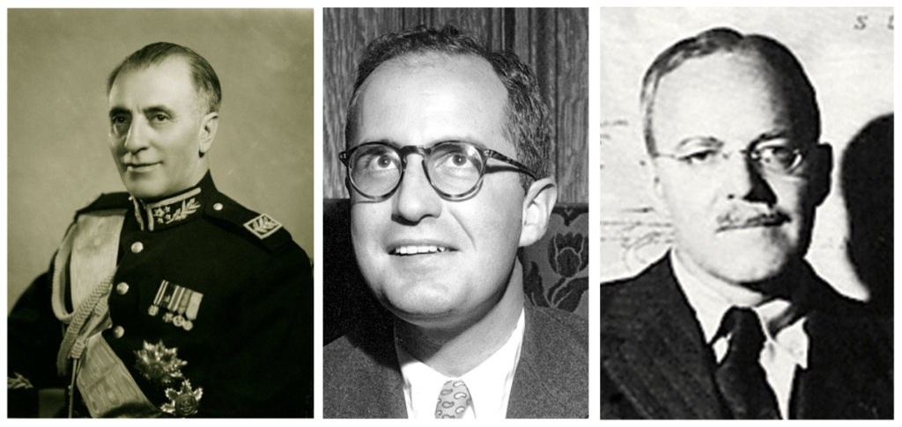
کودتا در ابتدا برای توطئه گران به راحتی پیش نرفت. حمله اولیه در ۱۵ اوت ۱۹۵۳ نتوانست مصدق را برکنار کند و در عوض ژنرالی را که قصد برکناری او را داشت دستگیر کرد. حمایت مورد انتظار برای شاه که وحشت زده از کشور، ابتدا به عراق و سپس به ایتالیا گریخت، ظاهر نشد. مصدق اگرچه به ظاهر کنترل اوضاع را در دست داشت، در این مرحله مرتکب اشتباهی مهلک شد. در حالی که ژنرالی که به نخست وزیری منصوب شده بود، فضل الله زاهدی (سمت چپ) آزاد بود، مصدق به هوادارانش (که برای اطمینان از ماندن او در قدرت به خیابان ها آمده بودند) گفت که خطر گذشته است و آنها باید به خانه های خود بازگردند. زاهدی، در عین حال، با کمک سرمایههای هنگفت از سوی سازمان سیا ایالات متحده، از آرمان خود حمایت میکرد (به عنوان یک پاورقی تاریخی، زاهدی در طول جنگ جهانی دوم به عنوان همکار نازیها دستگیر شده بود، اما به نظر میرسید که اکنون کسی از این موضوع ناراحت نشده بود). آمریکاییها و انگلیسیها دریافتند که هر مخالفتی که با مصدق وجود دارد باید به عمل بیاید. تحریککنندگانی استخدام شدند تا تظاهر کنند که معترضان کمونیست هستند، که در بازارها غوغا میکردند، کسبوکارها را خراب میکردند و این تصور را ایجاد میکردند که یک انقلاب کمونیستی قریبالوقوع است. یک جمعیت وحشت زده توسط گروه دیگری از فعالان حقوق بگیر سازماندهی شد که به عنوان پارتیزان شاه ظاهر می شدند و با معترضان «کمونیست» می جنگیدند. ارتش که پیش از این در بیعت خود با مصدق ناموفق بود، به حمایت از زاهدی برخاست و در عرض چند روز، او به نخست وزیری منصوب شد و مصدق دستگیر شد.
در آن زمان، با سرعتی خیره کننده، گام های آزمایشی ایران در جهت ایجاد یک دموکراسی مدرن و سکولار با کودتای ۱۹۵۳ خفه شد. اگرچه حکم اعدام او توسط شاه کاهش یافت، مصدق تا زمان مرگش در سال ۱۹۶۷ در حصر خانگی ماند. دولت و با کمک پلیس مخفی خود، ساواک، که در سال ۱۹۵۷ با کمک آمریکا و اسرائیل تأسیس شد، جمعیت ناراضی خود را که به طور فزاینده ای ناراضی شده بود، کنترل کرد. ساواک به دلیل استفاده مطالعاتی و سیستماتیک خود از شکنجه و کشتن زندانیان، اغلب کسانی که جرم دیگری جز انتقاد از رژیم نداشتند، بدنام شد. ناگفته نماند که سال بعد از کودتا، شرکت نفت انگلیس و ایران فعالیت خود را از سر گرفت.
برکناری مصدق لحظهای مهم در تاریخ معاصر ایران بود و عناصر مترقی جامعه ایران تا به امروز از آن یاد میکردند. مصدق از بسیاری جهات با ناصر در مصر قابل مقایسه بود، یک ناسیونالیست مدرن و ضد امپریالیست که در برابر قدرت های استعماری قدیمی ایستادگی کرد، طرح ملی کردن نفت ایران با ملی کردن موفق تر کانال سوئز توسط ناصر قابل مقایسه است. اگر انگلیسی ها و فرانسوی ها در برکناری ناصر در سال ۱۹۵۶ موفق شده بودند. تأثیر برکناری مصدق بر ایرانیان را می توان با تصور تأثیری که برکناری ناصر می توانست بر مصریان داشته باشد، سنجید. مصدق برای بسیاری از ایرانیان شهید شد. اگر دموکراسی در کشور ریشه دوانده بود، نمادی از جامعه بهتری بود که می توانستند داشته باشند. کودتا یک نمونه کتاب درسی واضح است، از آن نوع رویدادهایی که برای غربیها، اغلب کسانی که عقاید قوی دارند یا حتی مسئولیت سیاست در قبال ایران را بر عهده دارند، اشتباه فهمیده یا کاملاً ناشناخته است. جان اسنو روزنامه نگار در مصاحبه ای با تونی بلر نخست وزیر بریتانیا در سال ۲۰۰۶ اظهار داشت که بسیاری از مشکلات در روابط بریتانیا با ایران به کودتای علیه مصدق بازمی گردد. بنا بر گزارش ها، بلر با بی احتیاطی به او نگاه کرد و اعتراف کرد که هرگز درباره مصدق یا وقایع ۱۹۵۳ نشنیده است.
در سالهای بعد همه مخالفتها یا به صورت زیرزمینی یا خارج از کشور انجام شد. با این حال، اشتباه است که ادعا کنیم همه سیاستهای شاه لزوماً واپسگرا و استبدادی بوده است. در اوایل دهه شصت، یک سری اصلاحات ارائه شد که او دوست داشت از آنها به عنوان "انقلاب سفید" یاد کند. محور اصلی این برنامه مجموعه ای از اصلاحات ارضی بود که به دنبال تبدیل شخصیت هنوز فئودالی زمین داری ایران به مالکان کوچک مستقل بود. دهقانانی که تا آن زمان سهامدار بودند یا در برخی موارد کمی بهتر از رعیت بودند، برای خرید زمین هایی که کار می کردند از زمین داران بزرگ وام های ارزانی دریافت می کردند. شاه در مراسم مفصلی به سراسر کشور سفر می کرد و اسناد مالکیت این سرزمین ها را به رعایای قدرشناس خود می داد. بیشتر این تئاتر سیاسی بود که توسط شاه تنظیم شد تا خود را خیرخواه مردمش نشان دهد. در واقع، اصلاحات ارضی زاییده افکار وزیر کشاورزی او، حسن ارسنجانی بود که قبل از اجرای آنها برکنار شد تا شاه بتواند اعتباری را در اختیار بگیرد. همچنین به نظر می رسد که شاه که به شدت از نیاز به استقرار قدرت خود بر پایه اجتماعی محکم تر آگاه بود، این اصلاحات را انجام داد تا برای خود یک پایگاه قدرت در میان فقرا ایجاد کند و قدرت اشراف زمینی قدیمی را بشکند. .
بنابراین، این «انقلاب سفید» در واقع مهار ایدههای واقعاً مترقی شاه برای تقویت اقتدار خود در برابر تهدیدهای احتمالی برای اقتدارش، مانند مجلس خود، بود. پس از برکناری نخست وزیر علی امینی در سال ۱۹۶۲ چنین مخالفتی به طور فزاینده ای به حاشیه رفت و نخست وزیران صرفاً دست نشانده پادشاه شدند. با این حال، این واقعیت باقی می ماند که بسیاری از این ایده ها مدرن و مترقی بودند. کمپینی برای گسترش سواد در میان جمعیت عمدتاً بی سواد راه اندازی شد، یک قانون انتخاباتی جدید به دنبال این بود که حقوق مشارکت در سیاست (تا حد محدودی که مردم بتوانند در سیاست شرکت کنند) به غیرمسلمانان و زنان، که تا قبل از این پس از آن اجازه رای دادن نداشتند. به ویژه این سیاستهای اخیر بود که مخالفت گروهی از جامعه ایران را برانگیخت که به طور کامل تسلیم نشده بودند: روحانیون. این تنها گروهی بود که شاه از بیگانگی آنها احتیاط کرد، اما آنها را بیگانه کرد.
همیشه اینطور نبوده است. از ترس شروع کمونیسم در زمان کودتا، بسیاری از روحانیون در آن مقطع به سمت شاه متحد شده بودند. بخش بزرگی از روحانیون همچنان به اصل عدم مداخله در سیاست پایبند بودند. ایشان را الگوی آیتالله العظمی (مقام مذهبی شیعه) سید بروجردی که در شهر مقدس قم سکونت داشت و در امور سیاسی در میان روحانیون تبلیغ میکرد. با این حال همه پیروان بروجردی با او موافق نبودند. نوع دیگری از تفکر در اوایل دهه ۱۹۶۰ به عنوان واکنشی به اصلاحات شاه در حال ظهور بود. این استدلال میکرد که روحانیت نقش فعال و حتی برجستهای در زندگی سیاسی داشت و وقتی بروجردی در سال ۱۹۶۱ درگذشت، یکی از شاگردانش که در زمان حیاتش توسط استادش مقید شده بود، این محدودیت را کنار گذاشت و تبدیل به رهبر شد. منتقد برجسته روحانی شاه و «انقلاب سفید» او. نامش روح الله خمینی بود. اینجا خمینی در سال ۱۹۶۴ و بعد از آن زندگی، زمانی در دهه ۱۹۷۰ است:
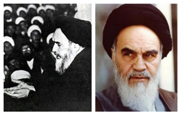
در سال ۱۹۶۴ خمینی تظاهراتی را رهبری کرد که حول دو لایحه به دستور شاه در مجلس تصویب شد، یکی، وام ۲۰۰ میلیون دلاری از ایالات متحده، و دیگری (که آشکارا مشروط بر آن بود) قانون جدید برای اعطای پرسنل آمریکایی در کشور. مصونیت از تعقیب قضایی در دادگاه های ایران خمینی احساس عمیقی از تحقیر توده ها نسبت به این ترتیبات را بیان کرد و خاطرنشان کرد:
«حتی اگر خود پادشاه به سگی که متعلق به یک آمریکایی است پای بگذارد، تحت تعقیب قرار میگیرد، اما اگر آشپز آمریکایی به شاه پا بگذارد، هیچکس حق دخالت در کار او را ندارد. چرا؟ چون وام و آمریکا می خواستند. ایران خودش را فروخته تا این دلارها را بگیرد، دولت استقلال ما را فروخته، ما را در حد یک مستعمره پایین آورده است».
خمینی به یک شخصیت طلسم گر در ایران تبدیل شد تا حدی به این دلیل که تقریباً هیچ کس جرات نمی کرد آشکارا علیه رژیم صحبت کند. او کوبندهترین و ظالمانهترین چیزها را در مورد شاه و دولتش میگفت و ظاهراً نسبت به خطر شخصی که خود را در معرض آن قرار میداد بیتفاوت بود. دوره های زندان هیچ تفاوتی نداشت. وقتی آزاد شد و آنها ادعا می کردند که او قول داده است ساکت بماند. خمینی وجود چنین توافقی را انکار کرده و به تقبیحات خود ادامه خواهد داد. هاله عرفانی او با بی میلی دولت برای برخورد قاطع با او افزایش یافت. شاه در سال ۱۹۶۵ به جای اینکه او را در خانه یا زندان بازداشت کند یا او را به قتل برساند، خمینی را به تبعید خارجی فرستاد. ابتدا به ترکیه رفت، اما اندکی بعد به نجف، شهری در عراق نقل مکان کرد. سابقه طولانی پناه دادن به روحانیون شیعه که مخالف شاهان ظالم بودند. شاید در این مقطع زمانی که شاه این ضرب المثل قدیمی را در مورد نزدیک نگه داشتن دوستان و نزدیکتر به دشمنان خود فراموش کرد، کمتر نشانه ترس او از روحانی بود تا نشانه ای از تسلط بیش از حد او بر کشور. بدون شک او بعداً از این که به خمینی اجازه خروج و تحریک علیه او از خارج را داد، پشیمان شد.
به هر حال، شاه در دهه بعد از آن هیچ نگرانی نداشت. یک همهپرسی با اکثریت قاطع اصلاحات او را تأیید کرد (پیشنهادهای مورد حمایت دولت در این زمان همیشه با ۹۹ درصد حاشیه تأیید میشد و بنابراین چنین نتایجی مشکوک هستند). آنچه اعتراض عمومی وجود داشت، توسط پلیس به شدت سرکوب شد. بسیاری کشته شدند، برخی دیگر دستگیر و شکنجه شدند. از این نقطه به بعد، ترور دولتی دستور روز بود و میتوان ادعا کرد که هرگونه چالش مسالمتآمیز قانون اساسی برای قدرت شاه غیرممکن شد. مخالفت روحانیت توسط شاه به عنوان «ارتجاع سیاه» رد شد، کار یک مشت مرتجع که می خواستند کشور را به قرون وسطی بکشانند. با این حال، در بیشتر موارد، شاه همه مخالفتها را کار «کمونیستها» یا دیدن، یا به تصویر کشیدن برگزید. با تشدید اختلاس او بر کشور، تکبر و غرور نهایی او افزایش یافت.
این امر به ویژه پس از شروع بحران نفتی که در سال ۱۹۷۳ آغاز شد، زمانی که کشورهای تولیدکننده نفت اوپک با اعلام تحریم نفتی به تلافی کمک ایالات متحده به اسرائیل در جریان جنگ یوم کیپور (به پست قبلی مراجعه کنید) مشهود بود. علیه آمریکایی ها و متحدان منتخب. این در زمان افزایش مصرف نفت در غرب رخ داد و منجر به افزایش شدید قیمت کالا و هر آنچه که به آن وابسته است، یعنی هر چیزی که اقتصاد کل غرب صنعتی به آن وابسته است، شد.
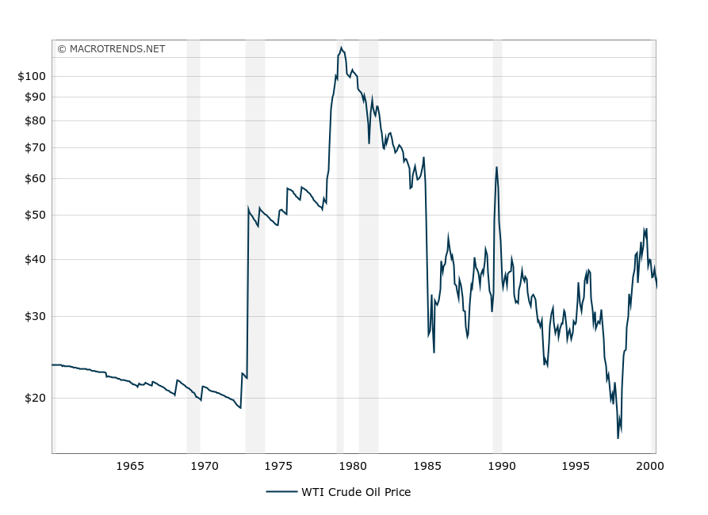
بحران نفت، در بلندمدت، یکی از دلایل اصلی انقباض اقتصادی بود که غرب را در دهه ۱۹۷۰ تحت تاثیر قرار داد. بررسی این جنبه خارج از محدوده این وبلاگ است. تأثیر آنی بر خاورمیانه و به ویژه ایران، پر کردن منطقه با دلارهای نفتی بود. آیا مردم کشورهایی مانند عربستان سعودی و ایران با معرفی دولت های رفاه جامع، بهداشت عمومی و آموزش بهتر، بهبود زیرساخت های حمل و نقل و ارتباطات از این موهبت بهره مند شدند؟
خیر، توسعه پایدار اتفاق نیفتاد
با حفظ تمرکز خود بر ایران، مشخص میشود که بخش زیادی از این سرمایههای بادآورده صرف تسلیحات شدند. شاه وسواس دیرینه ای داشت که ارتش ایران را به سومین ارتش قدرتمند جهان تبدیل کند (او همیشه مراقب بود که سومین ارتش را تاکید کند. واضح است که او هیچ آرزویی برای رقابت با ایالات متحده یا اتحاد جماهیر شوروی را نداشت. او همچنین بارها به غرب یادآوری کرد که علاقه ای به تولید سلاح هسته ای ندارد. به نظر نمی رسد آنها در هر صورت بی مورد نگران بوده باشند. با توجه به عدم تمایل ایران به توسعه انرژی هستهای حتی برای مصارف غیرنظامی در دهه گذشته، جالب است بدانید که در دوره شاه، ایران به طور مثبت توسط غرب برای توسعه انرژی هستهای تشویق شد، همانطور که این آگهی نشان میدهد:
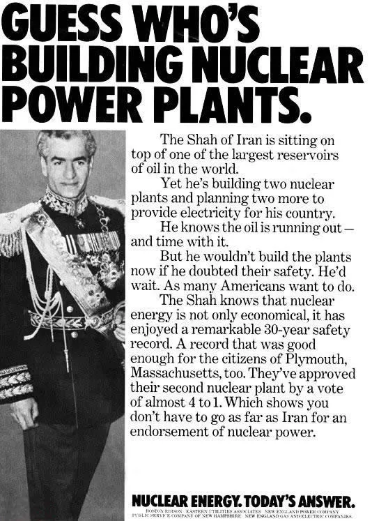
حدس بزنید چه کسی نیروگاه های هسته ای می سازد.
شاه ایران بر فراز یکی از بزرگترین مخازن نفت جهان نشسته است.
با این حال، او در حال ساخت دو نیروگاه هسته ای و برنامه ریزی دو نیروگاه دیگر برای تامین
برق کشورش است.
او می داند که نفت در حال تمام شدن است - و همینطور زمان.
اما اگر در امنیت آنها تردید داشت، الان این نیروگاه ها را نمی ساخت. او صبر می کند.
همانطور که بسیاری از آمریکایی ها
می خواهند صبر کنند.
شاه می داند که انرژی هسته ای نه تنها مقرون به صرفه است، بلکه سابقه ایمنی ۳۰ ساله چشمگیری
دارد. رکوردی که برای
شهروندان پلیموث ماساچوست نیز رضایت بخش بود. آنها دومین نیروگاه اتمی خود را با رای
تقریباً ۴ در برابر ۱ تأیید کرده
اند. این نشان می دهد که برای تأیید انرژی هسته ای نیازی به رفتن به ایران ندارید.
انرژی هسته ای. پاسخ امروز
البته دولت هزینه های خود را به خرید تسلیحات محدود نکرد. همچنین مبالغ هنگفتی برای پروژههای ساختمانی پرستیژ و مهمانیهای مجلل خرج شد تا جهان خارج را متقاعد کند که ایران یک شبه به یک کشور صنعتی پیشرفته تبدیل شده است. نمونه بارز آن جشن هایی بود که در شهر باستانی تخت جمشید در سال ۱۹۷۱ به مناسبت بزرگداشت ۲۵۰۰ سال سلطنت ایران برگزار شد. شاه خانوادههای سلطنتی را از سرتاسر جهان دعوت کرد تا شاهد بازآفرینیهای عظیم وقایع مهم تاریخ ایران باشند. همه در یک شهر بزرگ ساخته شده از چادرهای دارای تهویه مطبوع اقامت کردند و در یک وعده غذایی مجلل که توسط (رستوران گران قیمت در پاریس) Maxim’s of Paris با هزینه هنگفت تهیه شده بود، شام خوردند. کل این رویداد چهار روز به طول انجامید و هزینه ای در حدود ۲۰ میلیون دلار داشت. جشن ها در بیابان دور از محل سکونت معمولی برگزار شد (دفاع در برابر تظاهرات یا حملات احتمالی را بسیار آسان کرد). این بدان معناست که زیرساخت های ساخته شده برای جشنواره نمی تواند به هیچ کاربری دیگر تبدیل شود. تصاویر زیر کمی از شکوه این مناسبت را نشان می دهد:
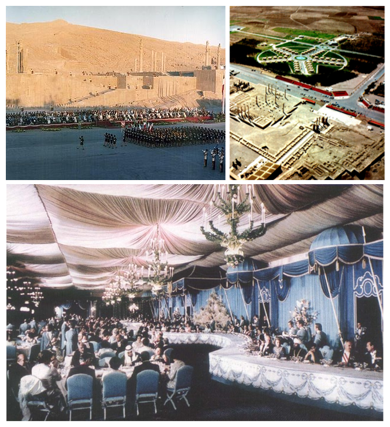
البته این سیلی بزرگی برای تودههای فقیر ایران بود و نشان میداد که شاه تا چه اندازه از واقعیت دورتر شده بود. حقیقت این بود که علیرغم وسواس شاه برای تبدیل ایران به جامعه مدرن، این تحول فقط در ظاهر بود. این فقط برای نخبگان کوچکی که شاه و خانوادهاش را احاطه کرده بودند به کار میرفت و به دست کشیدن از قدرت استبدادی او یا به اشتراک گذاشتن ثروت کشور خارج از این نخبگان گسترش نمییافت. پروژههای عظیم ساختمانی که در شهرها انجام شد، هجوم عظیمی از کارگران فقیر را از روستاها وارد کرد. رشد اقتصادی که روی کاغذ چشمگیر بود باعث تورم مارپیچی شد که باعث شد این افراد از نظر مادی وضعیت چندان بهتری نسبت به روستاهای خود نداشته باشند و مهمتر از همه، از شبکه های حمایتی و شمول اجتماعی خود جدا شوند. این پرولتر شهری بی قرار و ناراضی به سربازان پیاده انقلاب تبدیل می شد. هنگامی که شاه تصمیم گرفت کاری در مورد تورم انجام دهد، اقدامات ریاضتی که او اعمال کرد به شدت بر فقرا تأثیر گذاشت و تنها نفرت آنها را از او تشدید کرد.
حتی آن عده معدودی که تا حدی از هجوم درآمدها و سرمایههای خارجی سود میبردند، از افزایش شدید رانت در شهرهای بزرگ رنج میبردند. برای مدتی میتوان استدلال کرد که آنها به دلیل فقدان آزادیهای سیاسی با جستوجوی جانشین ثروت مادی تسلی میگرفتند. اما از قضا، از طریق مواجهه فزاینده آنها با فرهنگ غربی بود که ایرانیان تحصیل کرده از ارزش ها و حقوق سیاسی که در داخل از آنها محروم شده بود آگاه شدند. بسیاری از ایرانیان متوجه نبودند که نمیتوانستند در انتخابات معنادار رأی دهند، احزاب سیاسی تشکیل دهند یا حتی از ترس زندانی شدن یا بدتر از آن علناً از دولت انتقاد کنند، در کشورهایی که شاه ظاهراً آرزو داشت ایران را بسازد، عادی نبود. خود شاه تلویحاً این را پذیرفت و گفت: «وقتی ایرانیها یاد بگیرند مانند سوئدیها رفتار کنند، من هم مانند پادشاه سوئد رفتار خواهم کرد». شاید اگر او آنها را مماشات می کرد، ممکن بود اوضاع فرق می کرد، اما طبقات متوسط تحصیل کرده یکی از سرسخت ترین حامیان سرنگونی شاه بودند، اگر نه جایگزینی آن با حکومت دینی.
به همان اندازه که آشفتگی اقتصادی، یک کاتالیزور حیاتی برای انقلاب بود، تغییرات فرهنگی بود که با سختی های این سال ها همراه بود. شاه بر غرب زدگی تهاجمی طبقات بالا و متوسط نظارت داشت که درست مانند هجوم مالی به کشور، تعداد کمی را تحت تأثیر قرار داد، اما از سوی بسیاری با خشم به آن نگاه شد. پدیده مشابهی در مورد مصر در دهه ۱۹۷۰ در آخرین پست ذکر شده است. نخبگان حاکم که در حباب به ظاهر شکست ناپذیری و مجلل خود منزوی شده بودند، فراموش کردند که، علیرغم نوع مدرنیزاسیون سطحی که خود را با آن احاطه کرده بودند، ایران تا حد زیادی جامعه ای عمیقاً محافظه کار و پارسا باقی ماند. در اینجا یک تبلیغ از دهه ۱۹۷۰ برای چیزی به نام Rayovac است. دختری با دامن کوچک بدنساز را نوازش می کند... می توانید تصور کنید آیت الله دندان قروچه می کند.
در حالی که اکنون برای ما بسیار ساده و حتی عجیب به نظر می رسد، باید درک کرد که این یک فرهنگ بیگانه بود که بر مردمی تحمیل می شد که در بیشتر موارد آن را منحط، تکان دهنده و مبتذل می دانستند. در حالی که چنین فرهنگی در صورت همراهی با آزادسازی سیاسی و بهبود استانداردهای زندگی ممکن بود مورد استقبال قرار گیرد (مقایسه کنید آمریکایی شدن اروپای غربی پس از جنگ جهانی دوم)، در ایران با افزایش قیمت ها، دولت پلیسی و سانسور همراه بود. از این منظر، تعجب آور نیست که بسیاری آن را به شدت رد کردند.
این شرایط با ادامه دهه ۱۹۷۰ بدتر شد. یک سری اعتراضات خشونت آمیز و طولانی مدت طول کشید تا دولت واقعاً کنترل خود را از دست بدهد. نقطه عطف قابل توجهی در این خشونت مارپیچ، مرگ پسر خمینی بود که در ایران مانده بود، در اواخر سال ۱۹۷۷. بسیاری به دخالت ساواک مشکوک شدند و زمانی که در ژانویه ۱۹۷۸ مقاله ای در یکی از روزنامه های وابسته به دولت منتشر شد که در آن به آیت الله توهین شده بود. با متهم کردن او به خیانت، همکاری با دشمنان خارجی ایران و همجنس گرایی، تظاهرات خشمگینی در دفاع از خمینی ابتدا در قم و سپس در جاهای دیگر آغاز شد. نیروهای امنیتی تیراندازی کردند و معترضان را کشتند و حتی گفته شد که از اهدای خون بیمارستان های محلی برای نجات جان افراد جلوگیری کرده اند. این تنها اولین مورد از یک سری جنایات بود که در «جمعه سیاه» در سپتامبر همان سال به اوج خود رسید، زمانی که پلیس دهها تظاهرکننده غیرمسلح را در تهران کشت. این اغلب برای انقلاب و شاه «نقطه بی بازگشت» در نظر گرفته می شود.
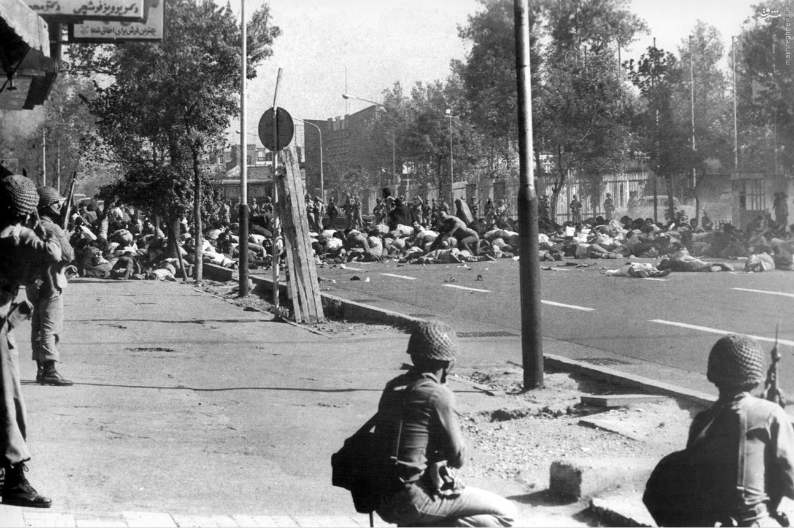
آیت الله پیشرو باقی مانده در کشور، شریعتمداری، اقدامات شاه را غیر اسلامی اعلام کرد و برای قربانیان چهل روز عزای عمومی اعلام کرد. این دوره های چهل روزه به چرخه ای از اعتراضات دامن زد، وحشیگری به شورش های بیشتر دامن زد، که جنایات بیشتری را از سوی دولت برانگیخت. اما زور وحشیانه دیگر در واداشتن مردم به تسلیم مؤثر نبود. تحلیل اینکه چرا مردم ایران در این مرحله عزم مقابله با رژیم را پیدا کردند، از بسیاری جهات توضیح می دهد که چرا انقلاب به شکلی که داشت به خود گرفت.
یکی از دلایل آن این بود که شرایط برای بسیاری آنقدر وخیم شده بود که کمتر چیزی برای از دست دادن داشتند. این یک زیربنای بسیاری از تحولات اجتماعی در تاریخ است. مردم را با چیزی برای از دست دادن رها کنید و آنها بی پرواتر از آنچه در غیر این صورت ممکن است با قدرت مقابله خواهند کرد. عنصر دیگر، اعتقاد به شهادت و ایثار بود که در اسلام شیعی همیشه قوی بود. با شتاب گرفتن اعتراضات سال ۱۳۵۷ خمینی اعلام کرد که درخت انقلاب باید با خون آبیاری شود. زمانی که تظاهرکنندگان غیرمسلح با ارتشی روبرو شدند که در مواجهه با این عزم، اعصاب خود را از دست میدادند، به طرز محسوسی بالا رفت. شاه به این کمک نمیکرد، زیرا نمیتوانست تصمیم بگیرد که قیام را با نیروی وحشیانه سرکوب کند یا امتیاز بدهد. در برخی مواقع، شاه نیروها را تضعیف کرد، شاه به آنها دستور داد شلیک نکنند و حتی علناً آنها را به دلیل انجام قتل هایی که دستور داده بود محکوم کرد. در موارد دیگر به آنها دستور داده شد که از تمام نیروی لازم استفاده کنند. شاه خیلی دیر پیشنهاد داد - آزادسازی نظام سیاسی و برچیده شدن ساواک - اما به جای ارضای خواسته های آنها برای تغییر، از سوی اپوزیسیون جسور شده به عنوان نشانه ای از ضعف و انگیزه برای پیشبرد هدف سرنگونی شاه تلقی شد.
عامل دیگر تشویق ضمنی مخالفان از بیرون بود. یکی از بشردوستانهترین رؤسای جمهور دوران مدرن، جیمی کارتر، در سال ۱۸۷۶ رئیسجمهور شده بود و در لفاظیهای مبارزات انتخاباتیاش نکاتی را بیان کرد که دولت ایران را تحت فشار قرار خواهد داد تا نظام سیاسی خود را به روی مخالفان معنادار باز کند. در دهه ۱۹۷۰ رژیم شاه که زمانی عزیز رسانههای غربی بود، تحت نظارت فزایندهای از سوی عموم مردم غرب قرار گرفته بود که (مثلاً در جنگ ویتنام) نسبت به حماقت حمایت از دیکتاتوریهای سرکوبگر در خارج از کشور هشدار داده بودند. کارنامه حقوق بشر ایران توسط عفو بین الملل محکوم شد و سفرهای او به خارج با اعتراض مواجه شد. اگرچه کارتر زمانی که واقعاً قدرت را به دست آورد، لفاظیهای مربوط به حقوق بشر را کاهش داد، اما ریاستجمهوری او این تصور را برای مخالفان ایرانی ایجاد کرد که از حمایت ضمنی او برخوردار هستند. حداقل دیگر مشخص نبود که آمریکایی ها تا کجا می خواهند شاه را در قدرت نگه دارند. خیلی ها به این نتیجه رسیدند که یک انگشت هم بلند نمی کنند. حق داشتند.
دولت به تدریج کنترل اوضاع را در سال ۱۹۷۸ از دست داد. در اکتبر، شاه درخواست کرد که خمینی از عراق اخراج شود. صدام حسین در واقع پیشنهاد ترور آیت الله را در این مرحله داد اما شاه بار دیگر قاطعانه عمل نکرد. خمینی ابتدا به کویت پناه برد، اما کویت از پناهندگی او خودداری کرد قبل از اینکه او تصمیم بگیرد در حومه ای آرام خارج از پاریس ساکن شود، کشورهای مسلمان دیگر مورد توجه قرار گرفتند. در حالی که هزاران مایل دورتر بود، اجازه شاه به خمینی برای فرار به فرانسه اشتباه بزرگ دیگری بود. آیتالله با دسترسی بهتر به ارتباطات و منابع جامعه تبعیدی ایرانی، در واقع بهتر از عراق میتوانست انقلاب را از پاریس رهبری کند.
رهبری شخص خمینی چیزی است که در هر روایتی از انقلاب ایران باید به آن اذعان کرد. تعداد کمی از افراد در تاریخ اخیر چنین کنترلی بر توده های مردم اعمال کرده اند. در برخی مواقع در ماههای آتی، به نظر میرسید که خمینی صرفاً باید آرزوی خود را بیان کند که کاری برای تحقق آن انجام شود. کاریزما و اراده محض او یک پویایی مرکزی انقلاب بود و از بسیاری جهات برای بیگانگان غیرقابل درک بود. هفتاد و شش در زمان انقلاب و با 14 سال زندگی در خارج از ایران، حتی تا زمان بازگشت به ایران، از نظر اکثر ناظران انتظار می رفت که روحانی پیر نقش معنوی مبهمی در دوران پس از انقلاب داشته باشد. دوران انقلابی، مانند گاندی یا دالایی لاما. همانطور که مشاهده خواهد شد، آنها نمی توانستند بیش از این اشتباه کنند. علیرغم این واقعیت که بسیاری از معترضان تصاویر خمینی را حمل می کردند و کشور مملو از نوارهای ضبط شده خطبه های او بود، شاه تا سال ۱۹۷۷ همچنان تهدیدات مذهبی سازمان یافته را نادیده می گرفت. چه تلاش دیرهنگامی انجام داد. برای رسیدگی به نارضایتی ها عمدتاً متوجه اپوزیسیون طبقه متوسط، تحصیل کرده و تحت تأثیر غرب بود - وارثان جبهه ملی و مصدق. در واقع، این عنصر اپوزیسیون که برای راحتی با روحانیت متحد شده بودند، به نظر نمیرسد که حکومت دینی تحت حاکمیت خمینی و یارانش یک احتمال جدی باشد. به نظر می رسد آنها معتقد بودند که می توانند از نفوذ روحانیون بر توده ها استفاده کنند و پس از خلع شاه، آنها را کنار بگذارند. در واقع قرار بود برعکس این اتفاق بیفتد.
با توجه به آنچه پس از انقلاب رخ داد، به راحتی می توان در گذشته فراموش کرد که نیروهایی که شاه را برکنار کردند، چند وجهی بودند، گروه های فشار متنوعی با منافع بسیار متفاوت. غیرقابل اجتناب بود که اسلام گرایان به روشی که بعداً انجام دادند، به طور کامل قدرت را در دست بگیرند. دلایل این امر متنوع است. همانطور که قبلاً اشاره شد، این تا حدی به روشی مربوط می شود که شاه و دستگاه امنیتی او بیشتر سرکوب خود را بر اپوزیسیون چپ متمرکز کردند. وقتی زمان فرا رسید، روحانیت و حامیان آنها در وضعیت بسیار بهتری برای استفاده از فرصت برای ایجاد یک دولت جدید بودند. مسجد در مقابل اتحادیهها، محلهای کار یا باشگاههای اجتماعی به کانون طبیعی مخالفتهای سازمانیافته تبدیل شد. روحانیون با نارضایتی های گسترده بسیار موفق تر از چپ ها ارتباط برقرار کردند.
در واقع، اگر فردی بود که در دهه ۱۹۷۰ با خمینی به عنوان روح مخالف در ایران رقابت کرد، آن علی شریعتی بود. او جامعهشناس و فیلسوفی بود که نوشتههایش آرمانهای سوسیالیستی اروپایی، آزادیخواهی جهان سوم و اسلام را در هم آمیخت و در جوشش ایدئولوژیک دوره انقلاب بسیار تأثیرگذار بود. وی در حالی که استدلال می کرد که اسلام می تواند یک نیروی انقلابی برای خیر باشد، به اسلام نهادینه شده اعتراض کرد و به نفع اسلام کمتر به نماز، تقوا و خداشناسی و در عوض به عمل، عدالت اجتماعی و برابری پرداخت. شریعتی کتاب کلاسیک ضد امپریالیستی فانون، Les Damnés de la Terre (به انگلیسی: The Wretched of the Earth) را به فارسی ترجمه کرد و مانند فانون عمیقاً تحت تأثیر جنگ آزادیبخش الجزایری ها علیه فرانسه قرار گرفت. او تاریخچه ای از اعتقادات خود را مطرح کرد که در مقابل «شیعه سیاه» به رهبری روحانیون، که در طول تاریخ با یک نخبگان متحد شده بود و به حکومت آن مشروعیت بخشیده بود، با نام خود «شیعه سرخ» که به آن اشاره می شد، تقابل داشت. اصول ایمان را در ترویج انقلاب در میان تودهها عملی میکند. شریعتی در حالی که یکی از نخستین خلفا را با چه گوارا مقایسه میکرد، استدلال میکرد که به مرور زمان، «شیعه سیاه» روحانیت تشیع مردم را تحت الشعاع قرار داده است.
در این تصویر، تظاهرکنندگان در جریان انقلاب، عکسهایی از شریعتی (جلو) و مصدق (پشت سر) حمل میکنند:
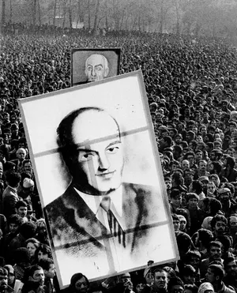
این عکس، اتفاقاً متعلق به مریم زندی است که کارش توسط حکومت ایران سرکوب شد تا اینکه در نهایت در
سال ۱۳۹۴ به او اجازه داده
شد تا تصاویر خود را از انقلاب به نمایش بگذارد.
http://www.theguardian.com/world/iran-blog/2016/feb/08/iran-1979-revolution-photograhy-maryam-zandi-pictures-enqelab-e-57
آنها سندی جذاب از این دوران پر فراز و نشیب هستند. آنچه از این تصاویر به دست می آید، تنوع دیدگاه
های سیاسی در مخالفت با
حکومت شاه است. من از علی شریعتی نام می برم زیرا او از بسیاری جهات نماینده راهی است که در انقلاب
طی نشده است، او در سال
۱۳۵۶ (تقریباً همزمان با پسر خمینی) بر اثر سکته قلبی درگذشت، اگرچه بسیاری معتقد بودند که او توسط
ساواک کشته شده است.
بیشتر از نارضایتی هایی که منجر به اعتراضات سال ۱۹۷۸ شد.
وقایع در اوایل سال ۱۹۷۹ به سرعت پیش رفتند. در ژانویه، شاه آخرین فشار را برای آرام کردن مخالفان انجام داد، با انتصاب یک نخست وزیر جدید، شاپور بختیار، که از اعضای جبهه ملی مصدق بود. اصلاحات گسترده از جمله بازنگری ساواک و محاکمه مقامات آن اعلام شد، اما همه اینها خیلی دیر بود. تظاهرکنندگان با تحریک خمینی در فرانسه، که هرگونه سازش با رژیم قدیم را رد میکرد، خواستهای خود را برای کنارهگیری شاه تشدید کردند. او در برابر امر ناگزیر سر تعظیم فرود آورد و به درخواست بختیار در روز ۱۶ ژانویه کشور را ترک کرد و وانمود کرد که فقط برای تعطیلات است، اما همه می دانستند که او فرار می کند. در فرودگاه، سربازی خود را جلوی پای شاه انداخت و به او التماس کرد که ترک نکند. من مطمئن نیستم که چرا ملکه در این تصویر بسیار خوشحال به نظر می رسد - شاید فقط از رفتن خوشحال است، یا به این دلیل که بنا به گزارش ها، او داروهای آرامبخش زیادی مصرف کرده بود تا او را از این تجربه عبور دهد.
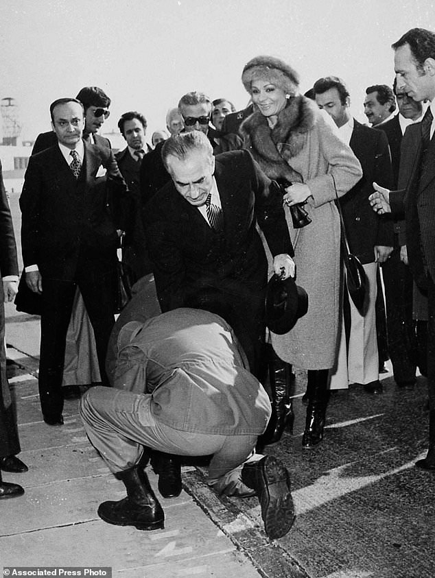
در عرض دو هفته، خمینی در پرواز پاریس به تهران بود. بر اساس بهترین برآوردها، ۵ میلیون نفر برای استقبال از او به خیابان ها آمدند. این گزارش از آن زمان، حس خوبی از هرج و مرج محض این رویداد و هیستری همراه با آن به دست می دهد:
در حالی که دولت بختیار باقی مانده بود، خواسته های مردم برای تغییر بسیار فراتر از بازگشت به وضعیت قبل از کودتای ۱۹۵۳ بود. خمینی به سرعت مجبور به رویارویی با بقایای رژیم قدیم شد و به پیروان خود دستور داد که مقررات منع آمد و شد دولت را نادیده بگیرند. یک رویارویی بین ارتش و حامیان خمینی که بسیاری از آنها اکنون به سلاح های غارت شده از پاسگاه های پلیس و سربازانی که به طرف آنها رفته بودند مسلح شده بودند. لحظه مهمی در ۱۰ فوریه فرا رسید که ارتش اعلام بی طرفی کرد تا از چشم انداز جنگ داخلی در صفوف خود جلوگیری کند. با عقب نشینی به پادگان ها، کنترل کشور را به انقلابیون واگذار کرد، بختیار با لباس مبدل از کشور گریخت. او در سال ۱۹۸۰ توسط رژیم اسلامی به اعدام غیابی محکوم شد، اگرچه از چندین سوءقصد در فرانسه جان سالم به در برد تا اینکه سرانجام در سال ۱۹۹۱ او را کشتند.
من این پست را به دلیلی "انقلاب شماره ۱" عنوان کردم. هنگام نوشتن این مطلب به سرعت مشخص شد که درک واقعی انقلاب ایران به سطحی از تجزیه و تحلیل دقیق منجر می شود که برای یک پست منفرد دشوار است. این رویدادی است که ورود اسلام به سیاست در نیم قرن اخیر حول آن می چرخد و به همین دلیل مهم است و بر ما واجب است که بفهمیم دقیقاً چه اتفاقی افتاده است. من فکر میکنم که میتوان آن را نه بهعنوان یک بلکه دو انقلاب بهخوبی بررسی کرد، انقلابی که شاه را حذف کرد و در اینجا مورد بررسی قرار گرفت و انقلابی که خمینی و پیروانش بهوسیله آن شکلی از حکومت اسلامی را بر کشور تحمیل کردند و به حاشیه راندند. به طور ملایم متحدان قبلی او و اکنون در جناح چپ سکولارتر انقلاب رقیب هستند. این انقلاب دوم در پست بعدی و همچنین نقش ایالات متحده در آنچه پس از آن خواهد آمد مورد بررسی قرار خواهد گرفت. پس از انقلاب، هم آمریکا و هم ایران دست به کارزار اهریمن سازی دیگری زدند که منجر به دهه ها تصور نادرست و ناآگاهی نسبت به ملت دیگر و نیات آن شد. با این حال، وقتی به آنچه واقعاً در پشت صحنه در آن زمان می گذشت نگاه می کنیم، متوجه می شویم که همه چیز آنطور که به نظر می رسید نبود.